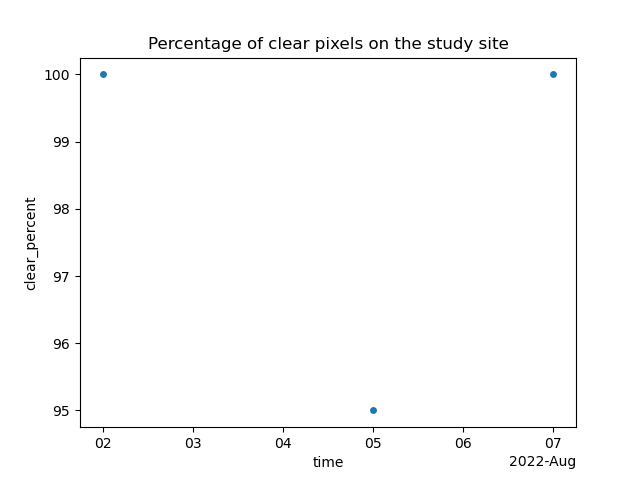

Note
Go to the end to download the full example code.
First steps to create a datacube
To create a datacube using Earth Data Store from EarthDaily you have two possibilities.
The first one is the more classic one, you request items, then you build your datacube, and then you can mask pixels using a cloudmask asset. The second one is the most turnkey one, the one we recommend, it allows to do all the process at once.
Import librairies
from matplotlib import pyplot as plt
import earthdaily
from earthdaily import EarthDataStore, datasets
Loading geometry
geometry = datasets.load_pivot()
Init earthdatastore with environment variables or default credentials
eds = EarthDataStore()
Create datacube (in one step)
s2_datacube = eds.datacube(
"sentinel-2-l2a",
assets=["blue", "green", "red", "nir"],
intersects=geometry,
datetime=["2022-08-01", "2022-08-09"],
mask_with="native", # equal to "scl" for sentinel-2
clear_cover=50,
)
s2_datacube.clear_percent.plot.scatter(x="time")
plt.title("Percentage of clear pixels on the study site")
plt.show()
s2_datacube.ed.plot_rgb(vmin=0, vmax=0.2, col="time", col_wrap=4)
- 
<xarray.plot.facetgrid.FacetGrid object at 0x7f5fd00dc350>
Create datacube in three steps
Request items
items = eds.search(
"sentinel-2-l2a",
intersects=geometry,
datetime=["2022-08-01", "2022-08-09"],
)
Creata datacube (independent from being log into earthdatastore) We request the “scl” assets which is the native cloudmask
s2_datacube = earthdaily.earthdatastore.datacube(
items, assets=["blue", "green", "red", "nir", "scl"], intersects=geometry
)
Mask datacube
# intersects or bbox are asked in order to compute accurate mask statistics
s2_datacube = earthdaily.earthdatastore.mask.Mask(s2_datacube, intersects=geometry).scl(
mask_statistics=True
)
s2_datacube = earthdaily.earthdatastore.mask.filter_clear_cover(
s2_datacube, 50
) # at least 50% of clear pixels
#
s2_datacube.ed.plot_rgb(vmin=0, vmax=0.2, col="time", col_wrap=4)
<xarray.plot.facetgrid.FacetGrid object at 0x7f5fc4392850>
Total running time of the script: (0 minutes 10.490 seconds)